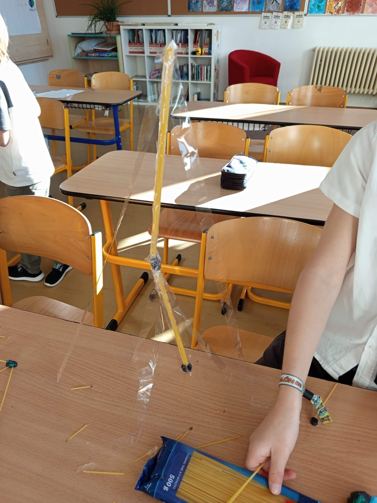

112 cm
měřila nejvyšší věž první skupiny, 20. října.
Ze začátku to děti moc nebavilo, ale jakmile první věže začaly růst, pustily se do toho. Věže nakonec zabraly celé dvě hodiny a dvojice soutěžily o nejvyšší a nejpevnější stavbu.
Druhá skupina začala rovnou ve dvojicích a také stavěla celé dvě hodiny jen věže. Vznikly vysoké tenké věže zpevněné páskou i nízké, široké stavby. Nejvyšší měřila 83 cm. Tentokrát jsme věže zatěžovali kelímkem s hřebíky.
